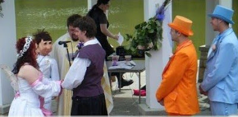

Dummy performs wedding
1/3/2011
From Scott Bryte: "My 'Pastor Woody' figure actually did officiate at a wedding in 2008. My Bishop was not a big fan of the idea. I had to keep reminding him that the dummy wasn't real, and assuring him it would be me signing the license. I don't remember anything in the ordination vow that said my lips had to move."
